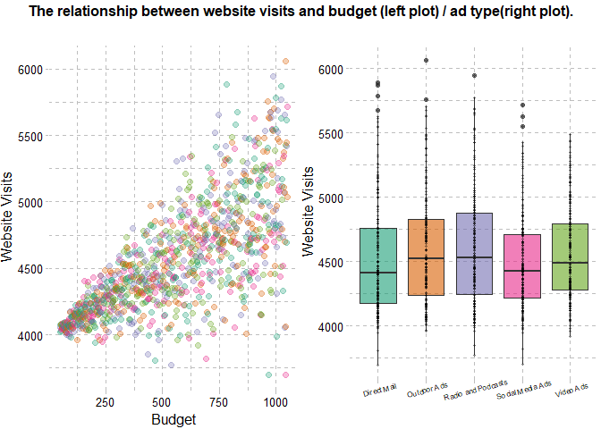
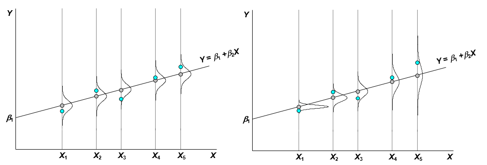
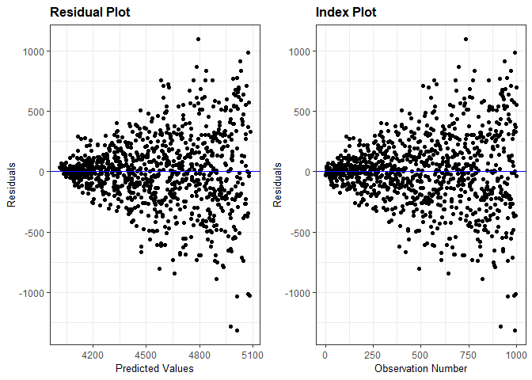
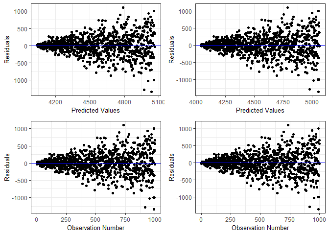
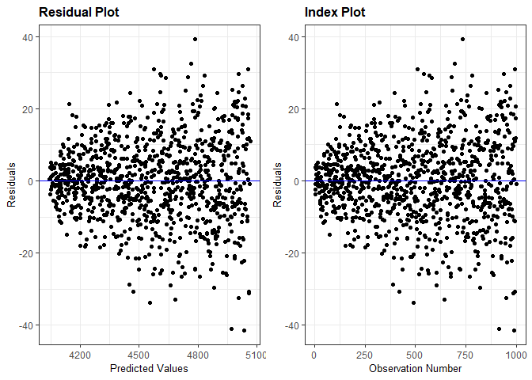
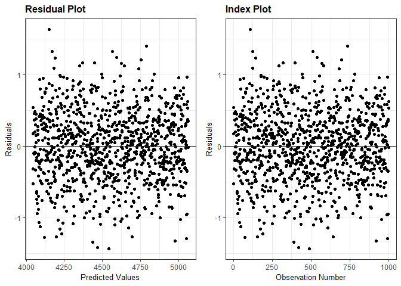

Introduction
Nowadays, having a business implies օwning a website. The primary aim of a website is to provide information, which is crucial in the modern business world. Suppose a website owner aims at increasing the number of visitors in order to have more views, sales or popularity. To achieve this goal, one first needs to understand the factors affecting web traffic. The vast majority of small businesses try to increase website hits or visits via advertisements.
We took a look at small business website statistics and saw how important advertising is. Let us review the artificially generated data. The summary of the dataset is presented below.
web <- as.data.frame(read.csv("website.csv"))
options(knitr.kable.NA = '')
kable(summary(web), digits=2)%>%
kable_styling(bootstrap_options = "striped",
full_width = F)
| Company | Budget | Visits | AdType | |
|---|---|---|---|---|
| Min. : 1.0 | Min. : 50.0 | Min. :3695 | Direct Mail :213 | |
| 1st Qu.: 250.8 | 1st Qu.: 299.8 | 1st Qu.:4228 | Outdoor Ads :199 | |
| Median : 500.5 | Median : 549.5 | Median :4460 | Radio and Podcasts:197 | |
| Mean : 500.5 | Mean : 549.5 | Mean :4554 | Social Media Ads :187 | |
| 3rd Qu.: 750.2 | 3rd Qu.: 799.2 | 3rd Qu.:4799 | Video Ads :204 | |
| Max. :1000.0 | Max. :1049.0 | Max. :6060 |
The data consists of 4 variables and 1000 observations without any
missing values. The variable Company shows the unique number of the
company whose website is being examined, variable Visits is the number
of website visits per week. The variables AdType and Budget show the
main type of advertising done by the company and the average monthly
amount spent on this advertisement, respectively. There are the 5 types
of advertisement in the data: Radio and Podcasts, Direct Mail, Video
Ads, Social Media Ads, Outdoor Ads.

The left graph indicates that there is a positive correlation between
the money spent on advertisement and the number of website visits. The
coloring of the plot has been done based on the variable AdType, and
the result shows that there is no interaction effect of two explanatory
variables on the popularity of the website. In general, website owners
spend an approximately equal amount of money on different types of
advertisements. Roughly there is no multicollinearity between
explanatory variables. Based on the second graph, as the medians and
spread of data are approximately the same, we can claim that the way one
chooses to increase the visibility of a website plays no significant
role.
To understand the effect of advertising let us consider the following multiple linear regression model:
The result of fitted linear regression is presented in the output below:
model <- lm(Visits ~ Budget + AdType, data = web)
##
## Results
## ===============================================
## Dependent variable:
## ---------------------------
## Visits
## -----------------------------------------------
## Budget 1.017***
## (0.032)
##
## Outdoor Ads 17.623
## (28.957)
##
## Radio and Podcasts 31.784
## (29.003)
##
## Social Media Ads -40.288
## (29.366)
##
## Video Ads -10.368
## (28.737)
##
## Constant 3,995.437***
## (26.096)
##
## -----------------------------------------------
## Observations 1,000
## R2 0.506
## Adjusted R2 0.504
## Residual Std. Error 293.017 (df = 994)
## F Statistic 203.633*** (df = 5; 994)
## ===============================================
## Note: *p<0.1; **p<0.05; ***p<0.01
It is not surprising that the coefficients for the unique levels of
variable AdType are not significant, because there is no effect on the
response variable Visits. However, the coefficient for the variable
Budget is statistically significant and positive (see the graph). So,
the multiple regression analysis shows that with the increase in the
amount of money spent on advertising by $$100 the number of visitors
will increase by, on average, 102. Thus, the number of visitors can be
predicted based on the ad budget.
And yet, this is not a reliable result, since an important factor has been omitted. We will now discuss briefly the concepts of heteroscedasticity, the causes and effects of nonconstant variance and the ways of solving this problem.
The problem
Nonconstant variance
One of the Gauss–Markov conditions states that the variance of the disturbance term in each observation should be constant. This assumption, however, is clearly violated in most of the models resulting in heteroscedasticity. Mathematically, homoscedasticity and heteroscedasticity may be defined as:
- Homoscedasticity: $$\sigma_{\epsilon_i}^2=\sigma_{\epsilon}^2$$ the same for all observations
- Heteroscedasticity: $$\sigma_{\epsilon_i}^2$$ is not the same for all observations.
See the visual demonstration of homoscedasticity and heteroscedasticity below:

The left picture illustrates homoscedasticity. Let us start with the first observation, where $$X$$ has the value of $$X_1$$ . If there was no disturbance term in the model, the observation would be represented by the circle lied on line $$Y = \beta_1+\beta_2X$$. The effect of the disturbance term is to shift the observation upwards or downwards vertically (downwards in case of $$X_1$$). The potential distribution of the disturbance term, before the observation was generated, is shown by the normal distribution.
Although homoscedasticity is often taken for granted in regression analysis, it is common to suppose that the distribution of the disturbance term is different for different observations in the sample. Suppose the variance of the distribution of the disturbance term rises as X increases (right picture). This does not mean that the disturbance term will necessarily have a particularly large (positive or negative) value in an observation where X is large, but it does mean that the a priori probability of having an erratic value will be relatively high.
The first graph of the relationship between the budget and visitors illustrates typical scatter diagram of heteroscedastic data - there is a tendency for their dispersion to rise as X increases. It means that even though there is a positive relationship between the variables, starting at a particular point large amount of money fails to imply a large number of visitors. In other words, one can spend huge sums without the guarantee of large traffic.
Reasons and consequences
Heteroscedasticity is more likely to occur, for example, when
- The values of the variables in the sample vary substantially in different observations.
- The explanatory variable increases, the response tends to diverge. For example, families with low incomes will spend relatively little on luxury goods, and the variations in expenditures across such families will be small. But for families with large incomes, the amount of discretionary income will be higher.
- The model is misspecified (using response instead of the log of response or instead of X^2 using X etc). Important variables may be omitted from the model.
Why does heteroscedasticity matter? As a matter of fact, the evidence for the absence of bias in the OLS regression coefficients did not use this condition. So we can be sure that the coefficients are still unbiased.
Nevertheless, two concerns are raised:
-
The variances of the regression coefficients: if there is no heteroscedasticity, the OLS regression coefficients have the lowest variances of all the unbiased estimators that are linear functions of the observations of $$Y$$. If heteroscedasticity is present, the OLS estimators are inefficient because it is possible to find other estimators that have smaller variances and are still unbiased.
-
The estimators of the standard errors of the regression coefficients will be wrong and, as a consequence, the t-tests as well as the usual F tests will be invalid. It is quite likely that the standard errors will be underestimated, so the t statistics will be overestimated and you will have a misleading impression of the precision of your regression coefficients. You may be led to believe that a coefficient is significantly different from 0, at a given significance level, when, in fact, it is not.
How to detect
Since there is no limit to the possible variety of heteroscedasticity, a large number of different tests appropriate for different circumstances has been proposed. There are also a lot of statistical tests called to test whether heteroscedasticity is present. The list includes but is not limited to the following:
- The Spearman Rank Correlation Test
- The Goldfeld–Quandt Test
- The Glejser Test
- The Breusch-Pagan test
- The White test
Despite the large number of the available tests, we will opt for a simple technique to detect heteroscedasticity, which is looking at the residual plot of our model. We can diagnose the heteroscedasticity by plotting the residual against the predicted response variable.
library(ggResidpanel)
resid_auxpanel(residuals = resid(model),
predicted = fitted(model),
plots = c("resid", "index"))

In our case we can conclude that as budget increases, the website visits tend to diverge.
The solution
The two most common strategies for dealing with the possibility of heteroskedasticity is heteroskedasticity-consistent standard errors (or robust errors) developed by White and Weighted Least Squares.
WLS
OLS does not discriminate between the quality of the observations, giving equal weight to each, irrespective of whether they are good or poor guides to the location of the line. Thus, it may be concluded that if we can find a way of assigning more weight to high-quality observations and less to the unreliable ones, we are likely to obtain a better fit. In other words, our estimators of $$\beta_1$$ and $$\beta_2$$ will be more efficient. WLS works by incorporating extra nonnegative constants (weights) associated with each data point into the fitting criterion. We shall see how to do this below. Suppose the true relationship is
$$Y_i = \beta_1+\beta_2X_i + \epsilon_i$$
and
\[var(\epsilon_i) = \sigma_{\epsilon_i}^2 \]
So we have a heteroscedastic model. We could eliminate the heteroscedasticity by dividing each observation by its value of $$\sigma_{\epsilon_i}$$. The model becomes$$ \frac{Y_i}{\sigma_{\epsilon_i}} = \beta_1\frac{1}{\sigma_{\epsilon_i}}+\beta_2\frac{X_i}{\sigma_{\epsilon_i}} + \frac{\epsilon_i}{\sigma_{\epsilon_i}} $$
The disturbance term $$\frac{\epsilon_i}{\sigma_{\epsilon_i}}$$ is homoscedastic because$$ E[(\frac{\epsilon_i}{\sigma_{\epsilon_i}})^2] = \frac{1}{\sigma_{\epsilon_i}^2}E(\epsilon_i^2)=\frac{1}{\sigma_{\epsilon_i}^2}\sigma_{\epsilon_i}^2=1 $$
Therefore, every observation will have a disturbance term drawn from a distribution with population variance 1, and the model will be homoscedastic. By rewriting the model, we will have
$$Y_i’ = \beta_1h_i + \beta_2X_i’+\epsilon_i’,$$
where $$Y_i’=\frac{Y_i}{\sigma_{\epsilon_i}}$$, $$h_i=\frac{1}{\sigma_{\epsilon_i}}$$, $$X_i’=\frac{X_i}{\sigma_{\epsilon_i}}$$, $$\epsilon_i’=\frac{\epsilon_i}{\sigma_{\epsilon_i}}$$
Note that there should not be a constant term in the equation. By regressing $$Y’$$ on $$h$$ and $$X’$$, we will obtain efficient estimates of $$\beta_1$$ and $$\beta_2$$ with unbiased standard errors. The general solution to this is $$\hat{\beta}=(X^TWX)^{-1}(X^TWY),$$
where $$W$$ is the diagonal martrix with diagonal entries equal to weights and $$Var(\epsilon)=W^{-1}\sigma^2$$.
In some cases, the values of the weights may be based on theory or prior
research. In our model, the standard deviations tend to increase as the
value of Budget increases, so the weights tend to decrease as the
value of Budget increases, thus the weights are known. Where the
weights are unknown, we can try different models and choose the best one
based on, for instance, the distribution of the error term. There are
the following common types of situations and weights:
-
When the variance is proportional to some predictor $$x_i$$, then $$Var(y_i)=x_i\sigma^2$$ thus we set $$w_i = 1/x_i$$
-
When the $$i^{th}$$ value of y is an average of $$n_i$$ observations $$var(y_i)=\frac{\sigma^2}{n_i}$$, thus we set $$w_i=n_i$$ (this situation often occurs in cluster surveys).
-
When the $$i^{th}$$ value of y is a total of $$n_i$$ observations $$var(y_i)={\sigma^2}{n_i}$$, thus we set $$w_i=1/n_i$$.
If the structure of weights is unknown, we have to perform a two-stage
estimation procedure. We need to estimate an ordinary least squares
regression to obtain the estimate of $${\sigma_i^2}$$ for $$i^{th}$$ squared
residual and the absolute value of standard deviation (in case of
outliers). Thus, we can have different weights depending on
$${\sigma_i^2}$$. Often the weights are determined by fitted values rather
than the independent variable. Let us show these different models via
statistical package R. Fortunately, the R function lm() ,which is used
to perform the ordinary least squares, provides the argument weights
to perform WLS. By default the value of weights in lm() is NULL,
weighted least squares are used with weights weights, minimizing the
sum of $$w*e^2$$.
Suppose we do not know the pattern of weights, and we want to fit the models with the following weights $$w_i=\frac{1}{x_i} , w_i=\frac{1}{x_i^2}, w_i=\frac{1}{y_i^2}, w=\frac{1}{y_{hat}^2}, w_i=\frac{1}{\sigma_i^2}, w_i=\frac{1}{|\sigma_i|}$$
wols1 <- lm(Visits ~ Budget + AdType, data = web, weights = 1/Budget)
wols2 <- lm(Visits ~ Budget + AdType, data = web, weights = 1/Budget^2)
wols3 <- lm(Visits ~ Budget + AdType, data = web, weights = 1/fitted(model))
wols4 <- lm(Visits ~ Budget + AdType, data = web, weights = 1/fitted(model)^2)
wols5 <- lm(Visits ~ Budget + AdType, data = web, weights = 1/resid(model)^2)
wols6 <- lm(Visits ~ Budget + AdType, data = web, weights = 1/abs(resid(model)))
The result of fitted models will be:
WOLS Results
Dependent variable: Visits
| (1) | (2) | (3) | (4) | (5) | (6) | (7) | |
|---|---|---|---|---|---|---|---|
| Budget | 1.017*** | 1.014*** | 1.018*** | 1.015*** | 1.014*** | 1.018*** | 1.014*** |
| (0.032) | (0.024) | (0.022) | (0.031) | (0.031) | (0.001) | (0.008) | |
| Ad Type: Outdoor Ads | 17.623 | 9.016 | 1.778 | 17.291 | 16.927 | 18.380*** | 16.810** |
| (28.957) | (19.540) | (10.354) | (28.251) | (27.531) | (1.405) | (8.426) | |
| Ad Type: Radio and Podcasts | 31.784 | 15.184 | 1.457 | 30.884 | 29.894 | 31.647*** | 28.276*** |
| (29.003) | (19.823) | (10.732) | (28.302) | (27.591) | (1.562) | (9.309) | |
| Ad Type: Social Media Ads | -40.288 | -10.390 | -0.402 | -36.504 | -32.869 | -39.380*** | -36.515*** |
| (29.366) | (19.315) | (10.069) | (28.470) | (27.571) | (1.498) | (9.223) | |
| Ad Type: Video Ads | -10.368 | 3.876 | 11.703 | -7.915 | -5.622 | -8.910*** | -8.182 |
| (28.737) | (20.532) | (12.335) | (27.977) | (27.217) | (1.597) | (9.493) | |
| Constant | 3,995.437*** | 3,993.525*** | 3,992.827*** | 3,995.256*** | 3,995.106*** | 3,994.459*** | 3,996.948*** |
| (26.096) | (14.600) | (7.216) | (24.978) | (23.908) | (1.388) | (7.472) | |
| ————— | —————- | —————- | ————— | —————- | —————- | —————- | —————- |
| Observations | 1,000 | 1,000 | 1,000 | 1,000 | 1,000 | 1,000 | 1,000 |
| R2 | 0.506 | 0.645 | 0.691 | 0.517 | 0.528 | 1.000 | 0.940 |
| Adjusted R2 | 0.504 | 0.644 | 0.689 | 0.515 | 0.526 | 1.000 | 0.939 |
| Residual Std. Error (df = 994) | 293.017 | 11.263 | 0.492 | 4.242 | 0.061 | 1.000 | 14.521 |
| F Statistic (df = 5; 994) | 203.633*** | 361.792*** | 444.545*** | 213.209*** | 222.603*** | 585,907.100*** | 3,091.199*** |
| ————— | —————- | —————- | ————— | —————- | —————- | —————- | —————- |
| Note: | *p<0.1; | **p<0.05; | ***p<0.01 |
Weighted least squares estimates of the coefficients will usually be
nearly the same as the “ordinary” unweighted estimates. In the models
with explanatory variables such as weight weights = 1/Budget^2
produces the smallest standard errors. The summary of models shows that
the fitted equations are highly similar yet again. Overall, the smallest
standard errors are presented by the model with
weights = 1/resid(model)^2.
Inverse of x and residuals with weights
However, as we know the pattern of weight allows to examine the residual plots for the first two weighted LS models.
resid_compare(models = list(wols1, wols2),
plots = c("resid", "index"),
title.opt = FALSE)

Apparently, the nonconstant variance of the residuals still results in heteroscedasticity. The issue is that the plots above use unweighted residuals; whereas, with weighted least squares, we need to use weighted residuals to evaluate the suitability of the model since these take into account the weights which change variance. The usual residuals fail to do this and will maintain the same non-constant variance pattern irrelevant to the weights used in the analysis.
# Weighted residuals by corresponding weight
resid_auxpanel(residuals = sqrt(1/web$$Budget)*resid(wols1),
predicted = fitted(wols1),
plots = c("resid", "index"))

resid_auxpanel(residuals = sqrt(1/web$$Budget^2)*resid(wols2),
predicted = fitted(wols2),
plots = c("resid", "index"))

It seems that the second WLS model with the following weights $$w_i=\frac{1}{x_i^2}$$, because the variability of residuals is the same for all predicted values. We can now be more confident in results and state that with every $$100 increase in the amount of money spent on advertising the number of website visitors will rise by, on average, 102. The absence of heteroscedasticity and the fact that the standard deviation of coefficient is less than in the original model allow to make predictions with higher level of certainty.
Conclusion
Overall, the weighted ordinary least squares is a popular method of solving the problem of heteroscedasticity in regression models, which is the application of the more general concept of generalized least squares. WLS implementation in R is quite simple because it has a distinct argument for weights. As we saw, weights can be estimated directly from sample variances of the response variable at each combination of predictor variables. WLS can sometimes be used where different observations have been measured by various instruments, importance or accuracy, and where weights are used to take these circumstances into account.
The disadvantage of weighted least squares is that the theory behind this method is based on the assumption that exact weight sizes are known. However, when it comes to practice, it can be quite difficult to determine weights or estimates of error variances. Note that WLS is neither the only nor the best method of addressing the issue of heteroscedasticity. The alternative methods include estimating heteroskedasticity-consistent standard errors, and other types of WLS (e.g. iteratively reweighted least squares).
Reference List
Oscar L. Olvera, Bruno D. Zumb, Heteroskedasticity in Multiple Regression Analysis: What it is, How to Detect it and How to Solve it with Applications in R and SPSS.
R. Williams, “Heteroskedasticity”.